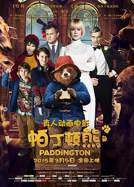

帕丁顿熊 / Paddington
又名：柏灵顿(港) / 柏灵顿：熊爱趴趴走(台) / 柏灵顿小熊大电影 / Paddington Bear
太可爱了。
作品信息
| 导演 | 保罗·金 |
| 编剧 | 保罗·金 / 哈密斯·麦克尔 / 迈克尔·邦德 |
| 主演 | 本·卫肖 / 妮可·基德曼 / 休·博纳维尔 / 莎莉·霍金斯 / 萨缪尔·乔斯林 / 马德琳·哈里斯 / 朱丽·沃特斯 / 吉姆·布劳德本特 / 彼得·卡帕尔迪 / 艾美达·斯丹顿 / 迈克尔·刚本 / 杰弗里·帕尔默 / 蒂姆·唐尼 / 迈克尔·邦德 / 马特·卢卡斯 / 裘德·怀特 / 西蒙·法纳比 / 洛蒂·斯蒂尔 / 特丽萨·沃森 |
| 类型 | 喜剧 / 动画 / 家庭 |
| 制片国家/地区 | 英国 / 法国 |
| 语言 | 英语 |
| 上映日期 | 2015-03-05(中国大陆) / 2014-11-23(伦敦首映) / 2014-11-28(英国) |
| 片长 | 95分钟 |
| IMDb | tt1109624 |
说过什么
2021-11-25 06:17:56
广播 · 看过 · ★★★★★
太可爱了。
最后一次看到是 2026-10-07T23:14:40+08:00 · 豆瓣原页